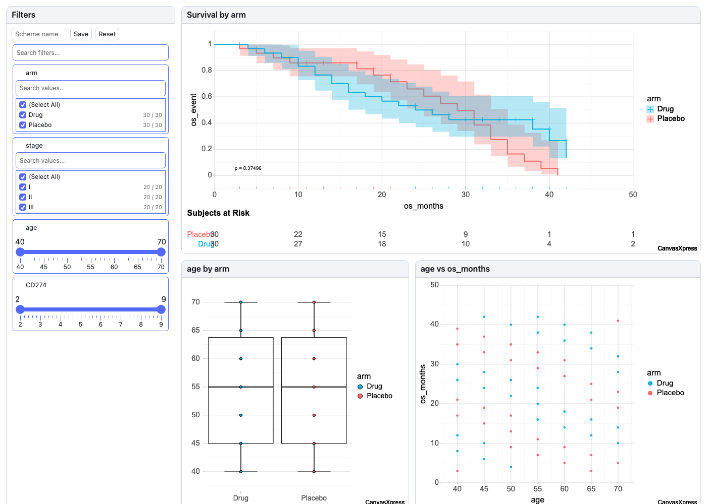
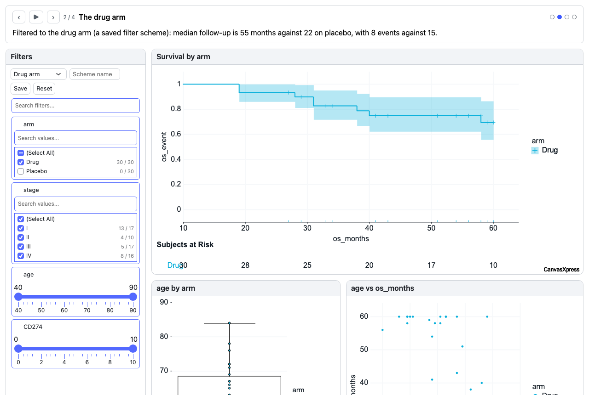
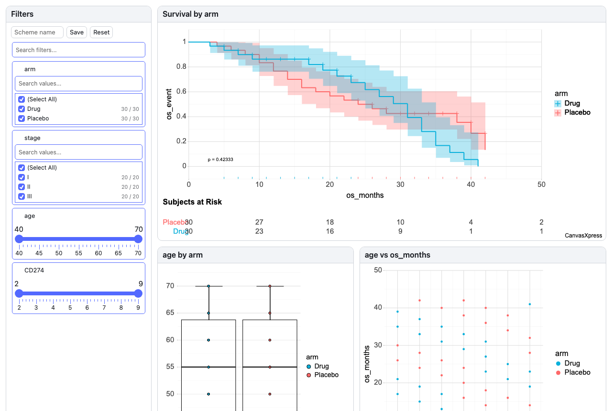

Using the R and Python packages
The same linked dashboards you build in the app render natively from Python and R, with no server: hand the package a data frame and it builds a whole dashboard, or hand it a dashboard spec (one you wrote, saved from the Builder, or returned by the MCP tool) and it renders that. This page shows install, a first dashboard, and where each one runs.
Python
1Install
pip install canvasxpress-dashboards pip install "canvasxpress-dashboards[pandas]" # only needed to pass a pandas DataFrame
There are no required dependencies: the renderer is bundled, and a spec is plain JSON. A dict of columns or a list of records works without pandas.
2Make a dashboard from a table
from canvasxpress_dashboards import Dashboard
Dashboard(data=trial, id="patient") # trial: a DataFrame; "patient" is the column of record ids
Dashboard(data=trial, id="patient").save("dashboard.html") # a standalone page
Dashboard(data=trial, id="patient").show() # opens it in your browser
Numeric columns are the measures, every other column annotates the records, and rows are the records.

The page Dashboard(data=trial, id="patient").save(...) writes.
3Or render a spec
Dashboard("my-dashboard.spec.json")
A spec with a storyboard gets its player bar: here the Cohort Tour example on step 2 of 4.

Dashboard("cohort-tour.spec.json"), with the storyboard bar above the board.
4Where it runs
| Where | How |
|---|---|
| Jupyter, VS Code, Quarto, Colab | Evaluate a Dashboard as the last line of a cell. It is an <iframe> that grows with the dashboard. |
| A file | .save("dashboard.html") (standalone, the renderer is inlined) or .show() |
| Flask, FastAPI, Django | Return Dashboard(...).to_html() from a view. |
| Dash | html.Iframe(srcDoc=Dashboard(...).to_html(frame=True), style={"width": "100%", "height": "1400px", "border": "0"}) |
| Streamlit | st.iframe(Dashboard(...).to_html(), height=1400) |
| Shiny for Python | ui.HTML(Dashboard(...).iframe_html(1400)) |
Flask and Dash are covered by the package's browser tests; Streamlit (1.66) and Shiny for Python (1.8) were run by hand and each draws the whole dashboard. The page is embedded as-is in a frame that runs JavaScript, so pass it only dashboards you trust.
A dashboard shown in a frame tells the page around it what changed (with window.postMessage): for
the case-card dashboards, params.case is the patient last clicked.
R
1Install
The package is under review for CRAN. Until it is there, install it from the repository:
install.packages("remotes")
remotes::install_github("neuhausi/canvasxpress-dashboards", subdir = "r")
2Make a dashboard from a data frame
library(canvasXpressDashboards)
cxdashboard(data = trial, id = "patient") # an htmlwidget: R Markdown, Quarto, the RStudio viewer, Shiny
cxdashboard("my-dashboard.spec.json") # or a spec: a list, a JSON string or a .json file

The page saved from cxdashboard(data = trial, id = "patient") with htmlwidgets::saveWidget().
I()
(xAxis = I("age"), not xAxis = "age"): a length-one vector would otherwise be sent as a
string. A spec read from JSON needs no care.3Use it in Shiny
ui <- fluidPage(cxdashboardOutput("dash"), actionButton("p18", "Show P018"))
server <- function(input, output, session) {
output$dash <- renderCxdashboard(cxdashboard(data = trial, id = "patient"))
observe(print(input$dash_params$case)) # the patient last clicked
observe(print(input$dash_template)) # "cohort" or "ngs-qc"
# ...and drive it from R:
observeEvent(input$p18, cxd_set_param(cxdashboardProxy("dash"), "case", "P018"))
}
The dashboard reports back its current parameters and which template was used, and
cxd_set_param() changes a parameter from R, for example to load a patient on the case card.
Good to know
- Engine: dashboards need the CanvasXpress engine. By default both packages load the current release from
canvasxpress.org. Python takes
engine_url=for a mirror or an offline folder; R takesengine = "canvasXpress"to use the copy bundled with the installed canvasXpress package, which may be older, so some behaviour can differ. - Not included: the Insights strip (
insightsin a spec) is computed by the dashboards server, so neither package shows it. Connector, dataset and live data sources need the server too. Inline data, which is what a data frame becomes, works anywhere, including a saved standalone page. - Size: each page includes the 1 MB dashboards bundle. In Python,
bundle_url=loads it from a URL instead, which keeps notebooks small.
The references are the python/README.md and r/README.md files in the repository, and the
packages are on PyPI
(Python) and in the repository's r/ folder (R).